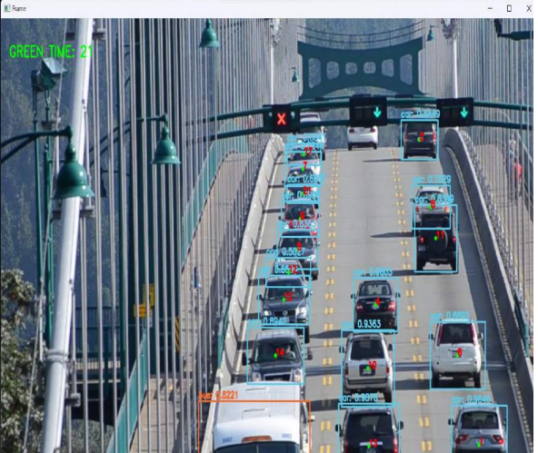
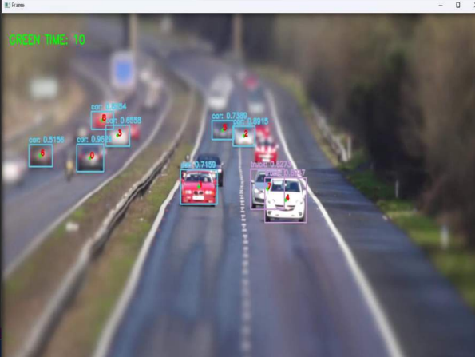
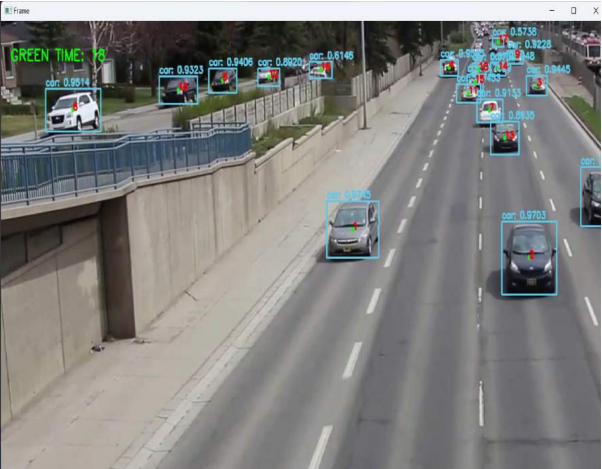

PROJECTS
Project Name
Smart traffic light control system by vehical detection using machine learning.
MY ROLE:
In This Project I Have Worked On Vehical Dectection And Calculation Of Vechical Density.
Description
Smart traffic light control system allocates the green signal time by vehical
density using python programming.At present, the traffic control frameworks in India, need insight and go about as an open�loop control framework, with no input or detecting system. Present technologies use
Inductive loops andsensors to detect the number of vehicles passing by. It is a very
inefficient and expensive way to make traffic lights adaptive. Using a simple CCTV
camera can improve the conditions. The visualtracking of objects is amongst the most
critical areas of computer vision and deep learning. The objective of this work was to
develop the traffic control framework by presenting a detecting system, which gives an
input to the current system, with the goal that it can adjust the changing traffic density
patterns and provides a vital sign to the controller in a continuous activity. Using this
method, improvement of the traffic signal switching expands the street limit, saves time
for voyaging, and prevents traffic congestion. The framework additionally goes for
consolidating exceptional arrangements for clearing the path for emergency vehicles. In
this paper, we will detectand track vehicles on a video stream and count those going
through a defined line and to ultimatelygive an idea of what the real-time on-street
situation is across the road network. Our real target is to advance the deferral in the travel
of vehicles in odd hours of the day. It uses the YOLO (“You Only Look Once”) object
detection technique to detect objects on each of the video frames and track those objects
over different frames. Once the objects are detected and tracked over different frames, a
simple mathematical calculation is applied to count the intersections between the vehicle's
previous and current frame positions with a defined line. and as per the count the signals
light triggered.
Libraries used
The code you provided uses several libraries to implement vehicle detection using YOLO (You Only Look Once) object detection algorithm.
Here are the libraries used in the code:
1. `numpy` (`np`): A library for numerical computations in Python.
2. `imutils`: A package with various convenience functions to work with OpenCV images.
3. `time`: A built-in Python module for time-related operations.
4. `scipy.spatial`: Part of the SciPy library, providing KDTree for spatial searching.
5. `cv2` (OpenCV): An open-source computer vision library, used for various image and video processing tasks.
6. `input_retrieval`: A custom module to handle input retrieval and parsing for command-line arguments.
Test Case 1.
Test Case 2.
Test Case 3.
DOCUMENT